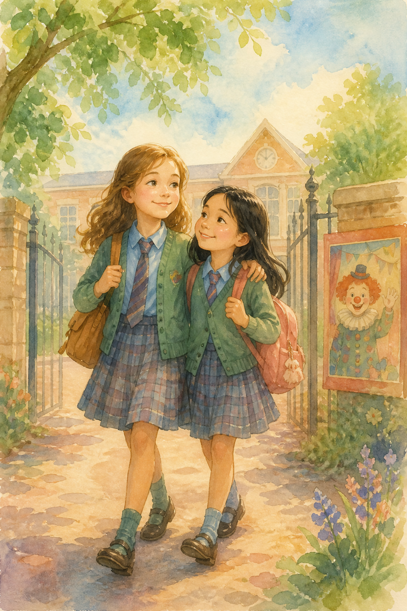

Vivian and HazelBook 2 — a play, a rival, and a sister’s secret
Sequel to The Shy Girl & The Popular Girl.
Hazel isn’t the shy new girl anymore. Then Noele arrives from her old school — and Bella still wants to break the friendship that lasted.
Best friends, still
Chapters
Standing Up
“Vivian!” called Hazel. “Oh Vivian, I looked everywhere for you! Where did you go?”
“More like where did you go! I’ve been waiting at the school gates for ten minutes,” replied Vivian.
“I was just getting to know a few new girls who got a bit lost,” said Hazel.
“Ooh, look — it’s our dear, faithful Vivian and devoted lamb Hazel!” said Ria.
“Hmmmm, oh yes — they look quite odd together, don’t they? Not fit for each other,” backed Bella.
“Hazel is just fake and Vivian is out of her mind,” said Lara.
“Nobody asked you! And I don’t like the way you’re acting towards us. Leave us alone!” retaliated Hazel.
“Oh, so it’s Hazel protecting Vivian now, is it?” asked Josie.
“Heard anything, Vivian? I thought I heard something. Oh! It was this bee buzzing. We’re going to be late — let’s go!” said Hazel.
Vivian looked at her admiringly. “Hazel, you were brilliant! How did you stand up to them?” she asked.
“Oh, I’ve experience from my old school,” replied Hazel. “I’m used to it.”
They both giggled.
“Thanks for standing up for us. Standing up for others is easy. Standing up for myself isn’t,” said Vivian.
Arm in arm the two girls walked to the classroom together. They took their seats and opened their books when Hazel noticed one of the new girls looked rather familiar. Then she recognised her.
How did she get here?
wondered Hazel. “Well, as long as she doesn’t bother me, I don’t really mind if she’s in the same class as me.”
The classes dragged on until finally it was break time.
“Oh, hi Hazel. I guess it’s nice to see you,” said the new girl Hazel had noticed.
Vivian looked surprised. “You know this girl?” she asked.
“Kind of. Vivian, meet Noele. I’ll explain how we know each other later. Now! Look at the time — we really are late. Come on, let’s go,” replied Hazel.
Vivian followed Hazel, confused. “Who is she?” asked Vivian.
“Oh, just a girl from my old school,” replied Hazel.
“Good or bad?” asked Vivian.
“Bad. Don’t talk to her much. I don’t want to expose her so I won’t tell you just yet. I don’t want to form your opinion about her,” said Hazel.
Vivian couldn’t help noticing that Hazel kept ignoring Noele, but realised Hazel was right when she saw her talking to Bella and laughing about something. Then Noele got up, marched toward a new girl and said, “You stink,” making Bella and her gang roar with laughter.
Things may have escalated if it wasn’t for Hazel. She got up from her place, walked to the new girl and said, “Don’t judge a person the second you see them, Noele. You’ve only just started your first day. Do you really want to spoil most people’s break just to tease a new girl? Shouldn’t you try to make yourself likeable?”
“Breather! Who are you to tell me what is right and wrong?” asked Noele.
“I am your classmate and an old-timer in this school. I do have the right to tell you to stop this nonsense — as you are a new girl and most obviously need to be put in your place,” replied Hazel.
That seemed to have shaken Noele a bit. She walked back to her place quietly.
“Thank you,” said the new girl.
“You’re welcome. What is your name?” asked Hazel.
“I’m Emma. What’s your name?”
“I’m Hazel. If you ever need any help, you can ask me or tell me anything,” replied Hazel, and walked back to her seat.
“You really have changed from the shy girl I knew last year,” said Vivian.
“Oh well — at least nobody will think I’m snobby,” replied Hazel.
A Play of Their Own
“Hazel! Where are you?” called Vivian.
There was a huge crowd in the assembly.
“Hazel! There you are! I’ve got some news,” said Vivian. “Miss Maya Colman said there’s going to be a school play and we get to write it! Maybe we should work together and write a really cool play?”
“Yes! That’s a great idea! Let’s do it today after school,” replied Hazel.
“Oh! So are you going to write a play too? So are we — and for your information, it’s going to be much better than what you’re doing,” said Noele.
“Oh, I see…… I thought you hated English about a year ago. So nice to see that you’ve changed so much,” said Hazel with a grin.
Noele glared at her, then walked away.
“How on Earth are you so good at standing up for yourself?” asked Vivian.
“The same way you are so good at standing up for others,” replied Hazel. “Now let’s go to class. I don’t fancy seeing any more of this crowd right now.”
The two girls walked to class together, discussing the play they meant to write. The day moved on, and Vivian went to Hazel’s house to discuss possible play ideas. They had many good ideas, but one stood out — and soon the two girls were busy writing it down.
Plot — The Clown of Nightmares
A clown is in charge of making nightmares for people. He enjoys his job, but one day one of his spells to make a nightmare backfires on him — and that night he struggles to sleep because of his own nightmare. The clown decides to quit, but the head of the circus won’t let him. So the clown makes a nightmare of what would happen if the head didn’t agree to his ideas, and gives him a dose of it. The head realises his mistake and lets the clown go — but the clown’s bag of nightmares explodes, and the magic spreads through the air. Children still get nightmares, but not as badly as before. At least they don’t get them every day. And everyone lives happily ever after.
Cast
- Clown / Joker
- Child 1, 2, 3, 4, 5
- Head of the circus
- Acrobat
- Clown’s friend
“Well, it’s not perfect, but it’s a good start,” said Vivian.
“It is quite good. Let’s show it to Miss Colman tomorrow. I’m sure she’ll like it,” replied Hazel. “And it will be one in the eye for Noele. She thought we couldn’t do it.”
“How was she like in your old school?” asked Vivian.
“Very snobby, spiteful, and an awful snitch,” said Hazel.
“Oh! Look at the time! It’s almost half past six. I’d better go now. Bye, Hazel,” said Vivian.
“Bye, Vivian!” called Hazel.
Auditions
The next day, Vivian and Hazel showed Miss Colman their play. Miss Colman said their ideas were good and agreed to read out the plot and the characters during her period. When she finished, this was the class’s response —
David — Jolly good idea, you two!
Lily — Thank goodness it’s not about a boring old fairy tale.
Emily — Fairy tales are good, but I like their concept of a clown being the main character.
Josh — Yes, I really like their plot.
Bella — I don’t! Clowns are meant to be funny, not scary.
Ria — Exactly!
Noele — It’s not as great as you make it to be.
David — Well, you’re outvoted! I’m sure everyone except you has agreed it’s a good idea.
Emily — Clowns can be scary too. My little brother is terrified of them.
Miss Colman — I think the majority of the class likes this plot. I’ll wait till tomorrow in case any others are interested in contributing their ideas. If nobody else has any, this plot will be the final plot for the school play.
(The next day)
Noele — Miss Colman, Bella, Ria and I have written this plot. Please do read it.
Miss Colman — Very well, I shall read it to the class — “Once upon a time, there lived a boy called Ry, who wrote this thing!”
Bella, Ria & Noele — We three did. Is it good, Ma’am?
Miss Colman — I’m afraid I can’t understand a word you’ve written. There are too many spelling errors. I’ve never heard of the name Ry!
Ria — It was supposed to be Roy.
Miss Colman — Please explain what you have written.
Noele — Well, Roy goes on an adventure.
Miss Colman — That’s it? What is the adventure?
Bella — Well… he is walking and the adventure just happens.
Miss Colman — I’m not asking how it happened. I’m asking what the adventure is.
Bella — Um…. He is going to school and he goes to a forest.
Miss Colman — I am not following you. Are you saying that he intentionally skips school and goes to a forest?
Ria — We… don’t know.
Miss Colman — Then how is this a proper story? You haven’t even told me what happens. I’m afraid I can’t count it. Any other ideas? Nobody?
Drake — Ma’am, I tried, but I don’t have a knack for it, you know.
Lily — I haven’t written a plot, but I can compose the music if any songs are in the play.
Miss Colman — Thank you, Lily. I’m sure that will come in handy sooner or later.
Emily — I’m good at sewing. I can make the costumes once the designs are passed on.
Miss Colman — That will be useful, thank you, Emily. Since nobody has a better plot than Vivian and Hazel’s, I am taking their plot as the story for our play. Vivian and Hazel are the directors, as they have written this play. I’m sure you two will work together well.
Hazel & Vivian — Oh yes! We’ll work together as much as we can.
Miss Colman — I am glad to hear it. You will be allowed to conduct auditions after lunch today.
(After lunch break)
Vivian — Listen up, everyone! The characters we need are a joker, five children, the head of the circus, an acrobat, a magician, a lion or animal tamer, and the clown’s sidekick.
Hazel — We would also like some names for these characters. Any suggestions?
Drake — We can call him the clown Jim.
Dizzy — Or Jack.
Emily — Or John.
Tia — Maybe Leo.
Noele — I’ve got it — how about Booh!
Hazel — Booh! That’s not even a name!
Noele — But after all he does scare people by creating scary nightmares.
Vivian — And she’s not wrong.
Hazel — Fine. Booh it is.
Vivian — Now, Noele — I’d like it to be Booh. I’ve a good sense of humour, much needed for a clown.
Vivian — We’ll see about that.
Tia — I’d like to be the acrobat. I’m good at yoga and gymnastics.
Jemma — I’d like to be an acrobat too.
Hazel — Okay, you two can be the acrobats — but before our first rehearsal, show me a trick or two.
David — I’d like to be a lion tamer.
Josh — And I want to be the head of the circus.
Emma — Hazel, I have an idea.
Hazel — Go on, Emma.
Emma — The clown becomes good, right? After he learns his mistake — maybe he wants to help people. What if he conducted reading sessions?
Vivian — Hmmm…. Yes, that does seem like a good idea.
Lily — What are the children supposed to do?
Hazel — They are the ones getting nightmares.
Emma — I’d like to be a child.
Lily — Me too!
Drake — Me three.
Emily — Me four.
Jenny — And me five.
Vivian — You can show us your acting skills when we start rehearsals. Okay, time’s up now — meeting disperse.
(They all walk towards class.)
Vivian’s Secret
Hazel and Vivian were heading to their classroom when someone tapped on their shoulders.
Bella — Hello, you two. I can see the pride has gone to your heads after your success. (To Hazel) I bet Vivian has told you you’re her BFF.
Hazel — Yes.
Bella — Well, she probably hasn’t told you her deepest, darkest secret, has she?
Hazel — I don’t mind. Everyone has secrets.
Bella — Well… what if I told you she told me her deepest, darkest secret?
Vivian — Bella! Please don’t tell Hazel.
Bella — I’m going to! Vivian has a sister who left for university two years ago.
Hazel — So?
Vivian — Yeah, so what?
Bella — I’m not finished yet. Before her sister left, they had a quarrel and never made up. Such a bad younger sister you are, Vivian! And Vivian thought her sister left because of her. Of course, I think she’s right for once — I mean, who can live with her?
Hazel looked at Bella scornfully. She was trying to do the same thing she had done when Hazel had joined last year. Bella had told Vivian Hazel’s past to break their friendship. But instead, it had made their bond stronger. She turned to Vivian, who had gone pale from fright.
Hazel — Vi, don’t worry. I’m staying by your side. (Puts an arm around Vivian. To Bella —) You think I’m going to leave my friend just because she made a mistake in the past? You really are horrible! First trying to humiliate me, then another new girl, and now my friend — you crossed the limit, Bella, and you’re probably going to regret it. Because just like last time, I feel like this is going to strengthen our bond, not crumble it. So your evil plan has backfired on you!
Bella — Well, whatever. I don’t care. (Walks away.)
Vivian — Thanks, Hazel. You really are a brick. I’m sorry I didn’t tell you earlier. It’s just that I didn’t want you to think the worst of me.
Hazel — Don’t worry. I know how you feel. I’ve been through it before.
Vivian — How can I do without you?
Hazel — Same question I asked about you a year ago. Now — do you want to come over for tea and a chat? I think, if you don’t mind, I want to discuss this sister of yours.
Vivian — Sure.
(At Hazel’s house)
Hazel — Vivian, look — if you don’t want to tell me anything, I’m not against it. But if you’re okay with telling me about it, I’m all ears. And I promise I won’t tell tales about you.
Vivian — (Takes a deep breath.) I’ll tell you what happened. You see, I have a sister, Samaya. She is the best sister you could ever ask for. We used to walk home from school arm in arm. She helped me with my homework while I filled her in about my day. When we were free we used to walk outside together and have fun. I can’t tell you how amazing she is. But then, things changed. She declared that she wanted to go to a university abroad and even got a scholarship to go there. I was proud of her and knew it was for the best — but a part of me couldn’t help wondering if she would be happy to get rid of me. When I asked her about it, she got angry and asked me what she had done to make me feel like that. To be honest her question was valid, and the truth is, I didn’t have any reason to think so. But then I lost my temper and we had a huge fight and didn’t sleep at all that night. She made up her mind to leave that very day. I wanted to say sorry, but my pride wouldn’t let me.
Hazel — To be honest, your story is just like how I felt when I changed to this school.
Vivian — Yes, but there’s one thing that sticks out. You couldn’t help being shy — but I could have held my tongue. That’s why I’m so ashamed about it. Maybe Samaya and I could have departed on a happy note.
Hazel — But Vivian — you would probably still wonder if she was leaving because of you if you didn’t ask her. At least you know that she bore no hard feelings about you. And I don’t think she does now either — and nor do you. You both are only acting like you hate one another because you’re hurt about what happened that day. Come on, Vi! Admit it! You don’t hate her, do you?
Vivian — You’re right. I bear no hard feelings about her, and nor does she about me. But we’re so hurt that we are doing some stupid pretence.
Hazel — Exactly! Come on, Vi — call your sister up and tell her you’re sorry. I’m sure she’ll be grateful to know you don’t assume anything about her.
Vivian — You’re right. I’m going to call her right now, and you are the witness in case anyone wants proof.
Hazel — I’m good with that.
Vivian runs to her house while Hazel fetches her mother’s phone and hands it over to Vivian.
Hazel — You know her number, don’t you?
Vivian — Yes. I’m dialling it now.
She dials the number. It rings once, twice, thrice — and then someone picks it up!
Samaya — Hello! Who is this?
Vivian — Samaya! Is it really you?
Samaya — Vivian! Yes it is me! How have you been?
Vivian — I’m doing good. How about you?
Samaya — I’m great.
Vivian — Samaya, I need to tell you something.
Samaya — Go on—
Vivian — I want to apologise for assuming you wanted to leave. It was awfully wrong of me. You can’t think how ashamed and guilty I am.
Samaya — Oh Vivian! I’m sorry too. I shouldn’t have snapped at you like that when you asked me that. It was natural of you to feel like that. I was just so worried about what to pack, how I would settle in there and everything, that anything that bothered me annoyed me.
Vivian — Oh really! You don’t know how much this means to me. And to think I wouldn’t have even thought of calling you if it wasn’t for my best friend Hazel. She’s a huge brick, you know. Do you remember Bella? Well, she’s not my friend anymore — she tried to spread rumours about Hazel, and today she exposed me to Hazel in hopes that Hazel would break away from me. But Hazel stood up for me and put her in her place. When I told her what happened between us, she convinced me to call you. We are even writing a school play together.
Samaya — Oh really! It’s so good to hear that you’re making such good friends. I never did like Bella — too snobby for my liking. And are you really writing the school play? What an honour. I’m so proud of you! I’m probably coming back home next month and I’m going to get a job near home, so I think I’ll come in time to see your play.
Vivian — What! You’re coming home! I’m so happy! Of course you’ll be in time for the play.
Samaya — Well, I’ve got to go now — I have a class now — but I’ll call you really soon, I promise. Bye, Vivian.
Vivian — Bye, Samaya. (Cuts the call. Claps Hazel into a hug.) Hazel! She’s coming back home! She’ll be in time to see our school play! She isn’t angry at me at all! Oh, I can’t tell you how happy I am.
Hazel — I’m so happy for you, Vivian. And it’s one in the eye for Bella. Not only has our bond grown stronger — even your sister is coming home to see you.
Vivian — Let’s talk about it in the park. I just can’t sit still.
The two girls walk to the park together, with huge smiles on their faces.
The Reason She Moved
Hazel and Vivian walked to school together, talking happily about Vivian’s sister, when they couldn’t help noticing that everyone was staring at Hazel.
Hazel — Why is everyone staring at me?
Vivian — I don’t know. Let’s find out.
As Vivian walked to her seat, she heard Lily tell her, “Have you heard? Apparently Hazel’s birthday party was completely empty because she didn’t have any friends.”
Vivian glared at Bella. Even though Bella was not her friend, she couldn’t believe she had spread rumours about Hazel.
Vivian — Why on Earth are you spreading rumours?
Bella — It wasn’t me. Just because I used to be one of the only people who knew Hazel’s past doesn’t mean I spread the rumours. You should ask Noele, not me.
Vivian looked at Bella carefully before deciding to trust her. She looked quite honest for once. But how could Noele do such a mean thing? She approached Noele scornfully.
Vivian — Noele! Why are you spreading rumours about Hazel? What did she do to you?
Hazel — Vivian!
Noele — Oh well! We were closer than you think.
Vivian ran to find Hazel. Hazel was sitting alone, looking terrified. Vivian sat next to her and put a comforting arm around her.
“Vivian, I didn’t mean to tell you about Noele, but I think I must now. You see, Noele was my best friend. We used to be together always. Things stayed the same and we both grew closer. But then she used me. She got me to write her notes, suddenly stopped being my friend, and spread rumours about me. And before I could explain my side of the story, everyone decided to believe Noele just because I was more shy than her. That’s the reason I moved here.”
Vivian — Oh Hazel! You poor old thing! How did you manage?
Hazel — Never mind all that. I just want a chance to explain myself.
Vivian — Fair. Why don’t you tell Miss Colman about it? As she’s our class teacher, she’ll probably sort it out.
Hazel — Good idea. Let’s go tell her now.
The two girls approach Miss Colman and tell her everything. Miss Colman assures Hazel that she’ll help set things right. During her period, she asks Hazel and Noele to come near the teacher’s desk and asks Noele to explain her side of the incident.
Noele — Ma’am, Hazel is responsible for everything. Ever—
To be continued…